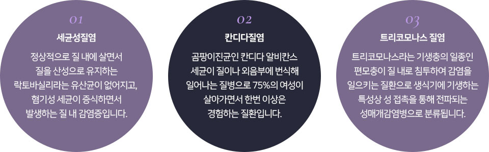
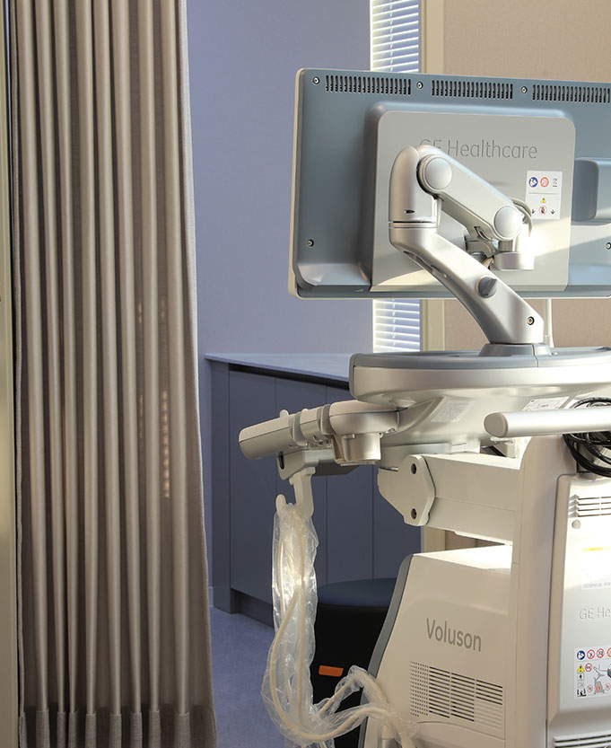

   <!-- <div class="layerPop" id="sec11pop">
      <button class="close"></button>
      <div>
        <h2>의 종류 및 특징</h2>
        
      </div>
    </div> -->


    <!-- <section class="section12" id="05">
      <div class="tit_wrap">
        <span class="en_tit"></span>
        <h2>개인별 맞춤 프로그램<br><strong>검진클리닉</strong></h2>
      </div>
      <div class="banner_wrap">
      </div>
      <div class="banner_txt container cont128" data-aos="fade-right">
        <p>체계적인 검진을 통해 여성 질환을 조기에 발견하고 치료합니다.</p>
        <p>건강에 대한 관심이 높아지고 질병 예방과 조기발견으로 건강을 되찾는 경우가 늘어남에 따라, 검진의 중요성이 높아지고 있습니다. <br>
          샘플는 일반적인 검진뿐만 아니라 여성들의 부인암과 성인병에 대하여 전문적인 검진과 전문의의 친절한 상담 및 적절한 치료를 통하여 <br>
          여성분들에게 건강한 삶에 도움을 드릴 수 있도록 최선을 다합니다.</p>
      </div>
      <div class="middle">
        <p>
          
          
        </p>
      </div>
      <div class="tit_wrap">
        <span style="color: #fff;">[&nbsp;&nbsp;&nbsp;검진클리닉&nbsp;&nbsp;&nbsp;]</span>
        <h2>샘플의 검진클리닉이<br><strong>체계적인 이유</strong></h2>
      </div>
      <div class="cir_wrap container cont128" data-aos="">
        <div class="line before">
        </div>
        <div class="cir">
          <div class="svg">
            <svg xmlns="http://www.w3.org/2000/svg" width="387" height="387" viewBox="0 0 387 387">
              <g id="타원" data-name="타원" fill="none" stroke="#fff" stroke-width="1">
                <circle cx="193.5" cy="193.5" r="193.5" stroke="none"></circle>
                <circle cx="193.5" cy="193.5" r="193" fill="none"></circle>
              </g>
            </svg>
          </div>
          <div class="box">
            <p class="num"></p>
            <div class="txt_wrap">
              <p class="tit">전문의의<br>정확한 진단</p>
            </div>
          </div>
        </div>
        <div class="cir">
          <div class="svg">
            <svg xmlns="http://www.w3.org/2000/svg" width="387" height="387" viewBox="0 0 387 387">
              <g id="타원" data-name="타원" fill="none" stroke="#fff" stroke-width="1">
                <circle cx="193.5" cy="193.5" r="193.5" stroke="none"></circle>
                <circle cx="193.5" cy="193.5" r="193" fill="none"></circle>
              </g>
            </svg>
          </div>
          <div class="box">
            <p class="num"></p>
            <div class="txt_wrap">
              <p class="tit">정밀한 검사가 가능한<br>최신 검사 기기</p>
            </div>
          </div>
        </div>
        <div class="cir">
          <div class="svg">
            <svg xmlns="http://www.w3.org/2000/svg" width="387" height="387" viewBox="0 0 387 387">
              <g id="타원" data-name="타원" fill="none" stroke="#fff" stroke-width="1">
                <circle cx="193.5" cy="193.5" r="193.5" stroke="none"></circle>
                <circle cx="193.5" cy="193.5" r="193" fill="none"></circle>
              </g>
            </svg>
          </div>
          <div class="box">
            <p class="num"></p>
            <div class="txt_wrap">
              <p class="tit">프라이빗한 시설에서<br>검사 가능</p>
            </div>
          </div>
        </div>
        <div class="line after"></div>
      </div>
    </section> -->

    <!-- <section class="section13">
      <div class="tit_wrap">
        <span>[&nbsp;&nbsp;&nbsp;검진클리닉&nbsp;&nbsp;&nbsp;]</span>
        <h2>샘플의 <strong>맞춤형 검진 프로그램</strong></h2>
        <p>샘플 검진클리닉은 <b>개인의 건강상태와 체질에 따른 맞춤형 검진 프로그램을 진행</b>하여 질병을 예방하고,<br>
          조기 진단을 통해 건강한 상태로의 회복과 유지를 도와드립니다.</p>
      </div>
      <div class="section13_cont">
        <div class="section13_page_cont"></div>
        <div class="swiper-wrapper">
          <div class="sl01 swiper-slide">
            <div class="img">
              <div class="txt_wrap">
                <p class="chk">Check-up 01</p>
                <p class="tit">기본검진</p>
                <p> 검사,<br>
                   검사,<br>
                 검사,  검사</p>
              </div>
            </div>
          </div>
          <div class="sl02 swiper-slide">
            <div class="img">
              <div class="txt_wrap">
                <p class="chk">Check-up 02</p>
                <p class="tit">종합검진</p>
                <p>검사,  검사,<br>
                  검사,  검사,<br>
                  </p>
              </div>
            </div>
          </div>
          <div class="sl03 swiper-slide">
            <div class="img">
              <div class="txt_wrap">
                <p class="chk">Check-up 03</p>
                <p class="tit">VIP검진</p>
                <p>검사,  검사,<br>
                   검사 프리미엄 검사,<br>
                  검사,  검사</p>
              </div>
            </div>
          </div>
          <div class="sl04 swiper-slide">
            <div class="img">
              <div class="txt_wrap">
                <p class="chk">Check-up 04</p>
                <p class="tit">검진 l</p>
                <p>액상자궁경부 세포진검사, 자궁경부 확대경 검사,<br>
                  인유두종바이러스 검사, 골반초음파 검사, 프리미엄 정밀균검사(STD 23종),<br>
                  소변검사, 풍진항체검사, 혈액 종합 33종 검사</p>
              </div>
            </div>
          </div>
          <div class="sl05 swiper-slide">
            <div class="img">
              <div class="txt_wrap">
                <p class="chk">Check-up 05</p>
                <p class="tit">웨딩검진 ll</p>
                <p>골반 초음파 검사, 소변검사,<br>
                  혈액 종합 33종 검사, 풍진 항체 검사</p>
              </div>
            </div>
          </div>
        </div>
      </div>
      <div class="tit_wrap" id="06">
        <span class="en_tit"></span>
        <h2>체계적인 질병 예방이 가능한<br><strong>건강증진클리닉</strong></h2>
      </div>
      <div class="banner_wrap">
      </div>
      <div class="banner_txt container cont128" data-aos="fade-right">
        <p>내 몸에 맞는 맞춤 영양치료를 시행합니다.</p>
        <p>여성의 건강을 지키기 위해서는 평소 식, 생활습관이나 위생관리가 중요하며,<br>
          각종 여성질환을 초기에 발견하고 관리할 수 있도록 정기검진도 꼭 이루어져야 합니다. <br>
          여성건강을 한층 더 증진하고 여러 병변을 미리 예방할 수 있는 샘플의 건강증진클리닉은 <br>
          일괄적인 처방이 아닌 현재 환자의 건강상태와 증상을 살피고 1:1 맞춤 솔루션을 제공하여<br>
          환자에게 맞는 다양한 방법으로 건강을 관리할 수 있습니다.</p>
      </div>
    </section> -->

  

        <!-- <div class="doctor_item doctor02">
          <div data-aos="fade-right">
            
            <p class="en_name"></p>
            <p class="slo">환자분의 고민에 진심으로 귀 기울여<br>
              정성을 다해 진료할 것을 약속합니다.</p>
            <p class="name">목지원<span>원장</span></p>
            <div class="his">
              <div>
                <p>삼성서울병원 산부인과 전문의</p>
                <p>삼성서울병원 산부인과 외래교수</p>
                <p>전 우성여성병원 과장</p>
                <p>현 샘플 대표원장</p>
              </div>
              <div>
                <p>대한산부인과학회 정회원</p>
                <p>대한폐경학회 정회원</p>
                <p>대한산부인과내분비학회 정회원</p>
                <p>American Registry for Diagnostic<br>
                  Medical Sonography (ARDMS) (OB/GYN)</p>
              </div>
            </div>
          </div>
          <div data-aos="fade-up"></div>
        </div> -->

           <!-- <div class="mainlayerPop-overlay" style="display:block"></div>
    <div class="mainlayerPop">
      <div class="layerPopTop">
        <input type="checkbox" id="todayNoPopchk"><label for="todayNoPopchk" class="label">오늘 하루 전체 닫기</label>
        <button></button>
      </div>
      <div class="layerPopCont">
        <div class="mainlayerCont" style="z-index:1002">
          <a href="#"></a>
          <div class="popup-bt"><a href="#">1일 동안 보지 않음</a> <a href="#">닫기</a></div>
        </div>
      </div>
    </div> -->


       <!-- <section class="section09">
      <div class="container cont128">
        <div class="tit_wrap" data-aos="fade-up">
          <span>[&nbsp;&nbsp;&nbsp;질건조증·질위축증 클리닉&nbsp;&nbsp;&nbsp;]</span>
          <h2>트리플 레이저 프로그램은<br>증상에 따른 맞춤형 비수술치료가 가능합니다.</h2>
        </div>
        <div class="laser_img">
          <p data-aos="fade" data-aos-delay="200"></p>
          <p data-aos="fade" data-aos-delay="400"></p>
          <p data-aos="fade" data-aos-delay="600"></p>
        </div>
        <div class="txt_wrap">
          <div data-aos="fade-up">
            <span>Triple Laser Program</span>
            <p>샘플는 <b>여성 전문의의 풍부한 시술 노하우로 질타이트닝과 질건조증, 질위축증 등</b>을<br>
              동시에 해결할 수 있는 <b>맞춤형 복합 시술을 진행</b>하고 있습니다. <b>첨단진단 장비</b>를 이용하여<br>
              현재의 질 상태를 꼼꼼히 확인하고 다양한 레이저의 맞춤 치료를 통해 질내 환경을 건강하게 개선시켜드립니다.</p>
          </div>
        </div>
      </div>
    </section> -->


       <!-- <div class="container cont128">

        <div class="tit_wrap" data-aos="fade-right">
          <span>[&nbsp;&nbsp;&nbsp;여성성형클리닉&nbsp;&nbsp;&nbsp;]</span>
          <h2>샘플 여성성형클리닉이<br>
            <strong>남다른 이유</strong>
          </h2>
        </div>
        <div class="cont_wrap">
          <div class="section04_item item--01">
            <div class="txt_cont">
              <h3><span></span>환자 <strong>개인별 1:1</strong> 맞춤 시술</h3>
              <p>충분한 상담과 세심한 진찰을 통해 환자에게 꼭 필요한 1:1 맞춤 시술을 진행하여 만족스러운 결과를 선사합니다.</p>
            </div>
            <div class="img_cont">
              
              
              
            </div>
          </div>
          <div class="section04_item item--02">
            <div class="txt_cont">
              <h3><span></span>풍부한 수술 노하우</h3>
              <p>다양한 수술 경험과 최신 첨단 장비의 빠른 도입으로 한층 더 편안하고 효과적인 치료를 제공합니다.</p>
            </div>
            <div class="img_cont">
              
            </div>
          </div>
          <div class="section04_item item--03">
            <div class="txt_cont">
              <h3><span></span>체계적인 진료시스템</h3>
              <p>상담부터 수술, 사후관리까지 환자가 안심하고 치료받을 수 있는 효과적이고 체계적인 시스템을 구축하고 있습니다.</p>
            </div>
            <div class="img_cont">
              
            </div>
          </div>
        </div>
      </div> -->
    